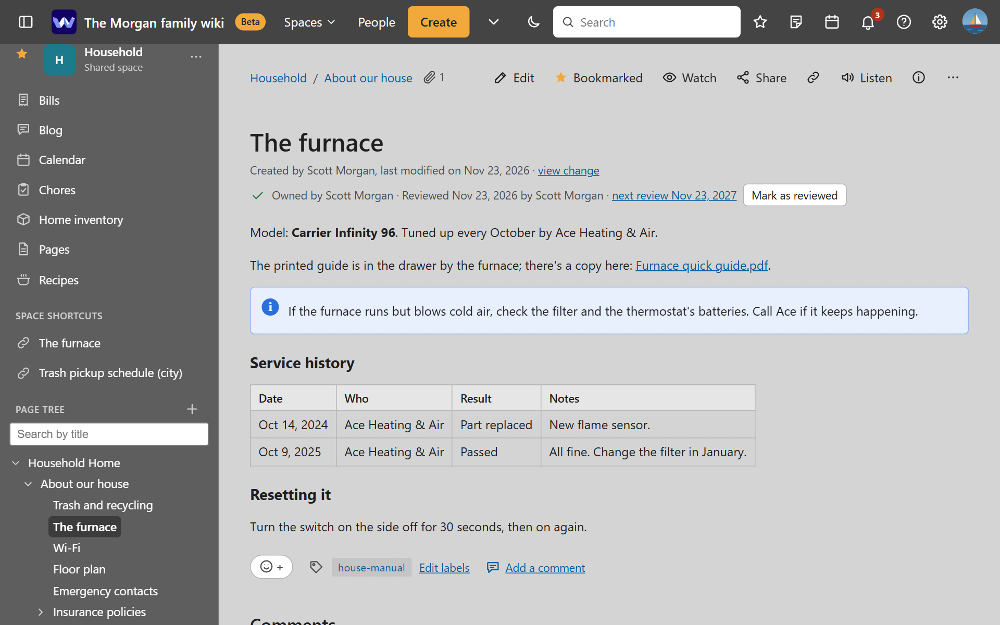

Spaces and a page tree
A shared space for each topic, such as Household, Recipes or a project, plus a personal space for everyone. Each has a home page, a page tree, its own shortcuts and a picture. Start one blank, or as documentation, a knowledge base or a team space, and keep it to yourself until you're ready to share it.
Edit what you see
A visual editor like the one you know from work: headings, text color, lists, tables with merged and colored cells, code blocks, quotes, and info, note, warning and tip panels. Add dates, status labels, emoji and anchors, with the same typing shortcuts and find and replace. No markup to learn, though you can paste Markdown.
Page layouts
Put text in two or three columns, with or without a sidebar, and as many sections of columns as a page needs, with ordinary text between them. On a phone the columns stack.
Drafts you don't lose
What you type is kept as a draft and comes back if you close the tab. Preview it or compare it with the published page, then save it with a short note on what you changed, or without telling watchers about a small fix.
Pages that stay up to date
Insert a table of contents, the pages under this one, the space's page tree, its recent updates and contributors, the pages with a label, or another page's text. Each is worked out whenever the page is shown, from what the reader may see.
Templates
Start a page from a template: Meeting notes, Decision, How-to, Troubleshooting and Retrospective come built in, and admins keep their own for one space or every space. A {date} in the title fills in the day.
Checklists
Packing lists, chores, shopping: check items off right on the page, no editing needed. Check all and Uncheck all reset a list, a table of boxes or the whole page, and Undo puts the check marks back.
Attachments and pictures
Attach files to any page, or paste and drop pictures straight into the text. Size, center, frame and caption a picture, or show a page's pictures as a gallery. Upload a file again and the earlier version is kept.
Labels
Tag pages and blog posts with labels, then click one to see every page that has it, in one space or all of them, with related labels. A page can list the pages with a label, kept up to date.
Comments and @mentions
Talk about a page underneath it, with replies. Type @ and a name in a page or a comment, and that person hears of it under the bell, or mention a whole group at once.
Inline comments
Select some text in a page and press Comment (on a phone, the button waits at the bottom of the screen). The text is marked in yellow, and its conversation opens in a panel beside the page, with replies, @mentions and the bell, as for any comment. When it’s settled, the person who asked or anyone who can edit the page presses Resolve: the mark goes, and the thread waits under Resolved comments in case it comes up again. If an edit takes the words out, the thread stays and says so. Confluence’s inline comments come across with an import, resolved ones resolved.
Diagrams and drawings
Insert a Mermaid diagram and type it as text (a flowchart of the home network, the steps of a chore, who does what) and it’s drawn as you type, in the light or dark look. Or insert a Drawing and draw with the mouse, a finger or a pen: rooms and furniture for a floor plan, tables for a seating chart, arrows, lines, freehand and text, in ten colors. Both live in the page itself, with its history, and everything is built in, so it works without the internet. Mermaid diagrams from Confluence come across with an import.
Suggested edits
Someone who can read a page but not edit it, like one of the kids, presses Suggest an edit and changes it in the normal editor, with a note on why. Nothing changes yet: the people who can edit the page hear about it in the bell, see exactly what would change side by side, and press Apply or Decline with a reply. Applying keeps a version noting who suggested it, and the person who asked hears what happened. Suggest a new page works the same way, and a space’s admins can turn suggestions off.
Page history
Turn it on and every save is kept, or just the last 7, 30 or as many as you choose, each with its note on what changed. See who changed what, compare any two versions side by side, and restore an older one.
Bring your old wiki
Import a Confluence space export or a whole-site backup, every space at once: pages, blog posts, attachments, comments, labels, templates, profile pictures, authors and dates, with as many earlier versions as you choose. Layouts, panels and macros come across, and links between the spaces are kept. Anything that can't be converted is kept as a marked placeholder, never dropped. Try it for a few days, then import again: each space replaces the one that came in before, or erase the wiki's spaces and start over.
Bring in your files
Create’s Import turns a Word document into a page, with its headings, lists, tables and pictures; a spreadsheet or CSV file into a page of tables, asking which sheets you want when a workbook has several; and a folder or .zip into a tree of pages that follows its folders, from Word documents, Markdown, text files and web pages, with their pictures and the links between them. Drop or paste one of those files into a page as you edit, and choose to put in what it holds or attach it. View a PDF shows an attached PDF right in the page.
Print it, or take it with you
Print a page, or a page with every page under it, with a contents list first and the comments if you want them, or save it as a PDF. It always prints black on white, whatever your theme. Download a page as a Word document or as Markdown, or a whole space as a .zip of web pages or Markdown files, with its blog and attached files. Everyone can export what they can read, and DesktopWiki can import the .zip back.
Pages for when you’re offline
Pick Keep offline in a page’s More menu, and that browser or phone keeps a copy of the page and its pictures and files. With no signal, on a trip or when the wiki’s PC is off, the page still opens, marked as the copy you kept. Offline pages in My work lists what you kept and how much room it takes. Whenever the wiki can be reached, your kept pages are brought up to date, and one that was deleted or that you can no longer see is dropped. Offline copies are for reading; edits wait until you’re back. Each browser and phone keeps its own, and signing out clears them.
Made for reading
Every heading on a page has a small link button that copies a link straight to that heading, for the step someone keeps asking about. Click a picture to see it as large as it fits, with Previous and Next (the arrow keys, or a swipe on a phone) through every picture on the page; Esc closes it. Hover over a link to another page for a moment and a card shows its title, its space, who updated it last and how it starts. A page you can’t see never shows a card.
Search everything
Results as you type, across every page you can see or in one space, with the matching words marked. “Boil” finds “boiler” and “boiling,” in pages, comments and inside attached PDFs and text files. A scanned PDF with no text of its own is read by Windows’ own text recognition, so its words are found too. Narrow the results to pages or files, or to what changed in the last day, week, month or year.
Watch and notifications
Watch a page or a whole space, and the bell tells you when someone changes it. Pages you make or edit are watched for you. Turn on notifications to hear about @mentions, replies, comments and shared pages on your phone or in your browser, even with the wiki closed, or as Windows notifications on the wiki’s PC. You choose what sends one.
Page links for anyone
Some pages are for people without an account: the babysitter’s bedtimes and phone numbers, the house-sitter’s plant schedule. Anyone who can edit a page can make a link to it from Share, with a QR code for a phone. The link shows the page as it is now, read-only, with its pictures and files, and nothing else of the wiki. Choose how long it works (a day, a week, a month, a year or until you stop it) and add a password if you like. Each page lists its open links with how often they were opened, and Stop ends one at once. Links work on your home network, and from anywhere once your wiki is open to the internet. An admin can turn page links off for the whole wiki.
Page owners and reviews
Some pages have to stay right: the doctors and medicines, the insurance policies, what to do in an emergency. Give such a page an owner and a review every 3, 6 or 12 months, or every 2 years. On the day it’s due, the owner is reminded on the bell, in the browser and in Windows, and the page says Needs review to everyone who can edit it. Once someone has checked it, Mark as reviewed sets the next date, and everyone who reads the page sees who owns it and when it was last reviewed.
Due for review
Add a Due for review section to your homepage and it lists the pages you own whose review is overdue or due in the next 30 days, soonest first, with the space, the date and how far off it is (“12 days overdue”, “in 9 days”). Checked one? Press Mark as reviewed right there. The Today section shows the ones due today or overdue, and Space tools → Page reviews gives a space’s admins every reviewed page in the space with its owner, last review and next review; click a column’s heading to sort by it. Each person sees only the pages they can open.
Pages that link here
Before you change or move a page, see what depends on it: every page’s menu has Pages that link here, with the pages that link to it or include it. Links go by the page itself, not its name, so moving or renaming a page never breaks them. Space tools → Broken links lists the links that go to a page in the trash or one deleted for good, so you can restore the page or fix the link. Pages you can’t see are never named.
Page properties and reports
Put a small table at the top of a page: the insurer, the policy number, the renewal date, the claims phone. Label the pages, and a Page properties report on another page lists them all in one table, a row per page and a column per property, from this space, every space or one you pick. Click a column’s heading to sort by it, by renewal date say. Change a policy’s page and the report shows it at once. Each person sees only the pages they can open, and Confluence’s Page Properties and Page Properties Report come across with an import.
People and groups
A directory of everyone on the wiki, with a profile each: picture, position, department, location and a few words about themselves, plus what they've worked on lately. Admins make groups, such as Kids or Parents, each with its own page.
A blog in each space
Post news and stories to a space's blog, newest first, with the author and the date. Posts have history, attachments and search like any page.
A family calendar
Each space can keep calendars, seen by whoever sees the space. An event says who it's for and is drawn in each person's color, so the month shows at a glance who has practice and who has the dentist. Events can repeat, carry a place and notes, and remind people on the bell, in the browser and in Windows. Birthdays come from profiles, with an age only if you give the year. Your private calendar link puts it all on your phone or in Google Calendar, and a space can read an outside calendar, such as the school's, every hour. Put a calendar on a page or on your homepage too.
Tasks and chores
Any checklist item that @mentions someone is their task, and a date in it says when it’s due, as in Confluence. My tasks shows yours as overdue, today, this week and later, plus the ones you gave others; check one off there or on its page. Add a task there gives one to you or anyone else without opening a page: it goes on the space’s Tasks page, made the first time it’s needed, and its person hears about it. Kids set up to only read a page can still check off their own chores on it. The bell tells you when someone gives you a task, again on the morning it’s due, and once more the next day if it isn’t done, on your phone or as a Windows notification too. Put a Task report in any page to list a space’s tasks by person, to do or done, and add My tasks to your homepage. Task reports in a Confluence import come over as task reports.
A home inventory
A tool of its own beside the wiki, the vaults and your homepage: Home inventory keeps the things your household owns, each with its room, make, model and serial number, when and where it was bought and for how much, when the warranty ends, notes such as the filter size, and its receipts, manuals and photos. Give it upkeep on a schedule, like “change the filter every 3 months” or “oil change every 6 months”, and press Done when it’s done: the next time moves on from that day. Whoever looks after the item hears on the bell at 9 AM, on their phone or in Windows too, when upkeep is due and a month before a warranty ends, and the homepage’s Today section lists what’s due. Narrow the list by room, category or words, see what it all cost, and print the insurance list (or save it as a PDF or a spreadsheet), the list an insurer asks for after a fire or theft. Items belong to a space, so whoever can see the space sees them, and search finds them too.
Recipes, a meal plan and a shopping list
Another tool of its own: Recipes keeps the family’s recipes with a photo, servings, prep and cook times, ingredients, steps, notes and tags. Change the servings and every amount scales (“1½ cups”, not “1.5”). Paste a recipe site’s web address and the wiki imports the recipe and its photo (it reads the recipe data most sites publish for search engines), or paste the text of one. Cook shows it in large type on a phone or tablet, keeps the screen on and checks off each step as you tap it. Plan the week’s breakfasts, lunches and dinners, then press Add the week’s ingredients: the same ingredient adds up across recipes (“2 lb ground beef”), salt and pepper start unticked, and everything lands on the space’s shopping list, sorted by aisle with big boxes to tick off in the store. Anyone who can see the space can add to the list and tick things off, kids included; a homepage section and the Today section show what’s still to get and what’s for dinner.
Bills and subscriptions
A tool of its own for the household’s recurring bills, kept small so it’s easy to keep up: Bills keeps each bill’s name and who it’s paid to, the amount (or the usual amount, for one that varies like the electric bill), how often it comes, the next due date, who pays it, and whether it’s on autopay or paid by hand, with a link to the company’s website and to the sign-in in your vault (never a password or card number in the bill itself). Mark paid records what was paid and moves the due date on; a bill due on the 31st comes back on the 31st after February. Autopay bills mark themselves paid on their due date. Whoever pays a bill by hand hears on the bell a few days before it’s due, on their phone or in Windows too, and again if it’s overdue, and the homepage’s Today section lists it. See this month’s bills paid and still to pay, what the bills cost a month and a year by category, and every subscription with what it costs a year, the easiest way to find the one nobody watches anymore. Download it all as a spreadsheet. Bills belong to a space, so whoever can see the space sees them. Nothing connects to your bank: a few lines typed once is all it takes.
A chore chart
Each space can have a chore chart: Chores in My work and in the space’s sidebar. A chore comes around every so many days, weeks or months, or on the weekdays you pick, and takes turns between up to eight people. Kids tick off their own turns, even when they can only read the space; the space’s editors, the parents, hear about it and Approve it, which gives its stars, or Send back. A turn that isn’t done by the end of its day is missed and the next person has the next one. This week shows whose turn each chore is on each day. Parents set Rewards with a price in stars; kids ask for one when they have enough, and a parent gives it or says not now. Parents can also give or take stars, for a bonus or a fine. Today on the homepage lists your chores for the day, and a Chores section shows the whole family’s day and stars, on a wall display too.
Sticky notes
Notes keeps your own sticky notes: plain text in yellow, green, blue, pink, purple or gray, newest first. Each is saved as you type, and deleting one offers Undo. Nobody else sees them, admins included. Open them from the note icon in the top bar, or choose New note in the tray icon’s menu to start typing a new one right away.
Bookmarks and your own lists
Bookmark pages to come back to, plus recently worked on, recently visited and starred spaces, and an All updates feed of what changed across the wiki.
See it for yourself
Download the free beta and open the demo wiki from setup or the tray icon: it’s this wiki, and nothing you do there is kept. See pricing for after the beta, or go back to all the features.